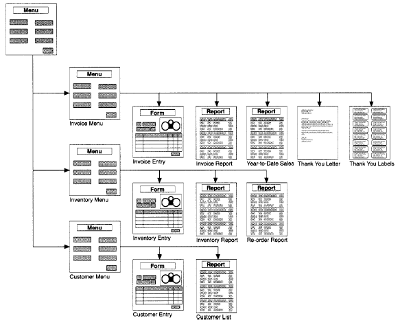

Application Overview
In Alpha Five, the term application, refers to a collection of layouts and operations linked together in such a way that a set of tasks can be performed without using the Control Panel. An Application may make use of Alpha Five's Xbasic programming language to fully customize the way the Application works. However, many quite effective Applications can be designed without using any Xbasic at all. Applications are often designed as a data management solution for use by people who have little experience with Alpha Five.
For example, you already use Alpha Five to help manage your mail-order business. You have created ten layouts that collectively let you enter and print invoices, keep track of inventory, maintain a mailing list, and write thank you notes to your big-ticket customers. Below is a list of these layouts:
|
Type |
Name |
Description |
| Form | Invoice Entry | Used to view, enter, and change invoices. |
| Form | Inventory Entry | View, enter, and change product information. |
| Form | Customer Entry | View, enter, and change customer information. |
| Report | Invoice Report | Prints individual invoices. |
| Report | Inventory Report | Prints a product list. |
| Report | Customer List | Prints a customer list. |
| Report | Year-to-Date Sales | Prints a sales Report of this year's sales. |
| Report | Re-order Report | Prints a list of products that need to be re-ordered |
| Letter | Thank You | Prints thank-you Letters to big-ticket customers. |
| Label | Thank You | Prints the corresponding Labels for the thank-you Letters. |
Each time you want to use a different layout, you go to the Control Panel, choose the appropriate layout and either open it or print it.
Since you already have experience using Alpha Five, this solution is fine. However, suppose you want your employees to use Alpha Five. While Alpha Five is easy to learn, showing your employees how to use Alpha Five the way you want them to use it still requires a fair amount of training. You would need to show them how to start Alpha Five, how to choose the correct database, and how to find their way around the Control Panel. After showing them how Alpha Five works, you would then need to explain the purpose of each of the layouts.
A better solution would be to create an application that ties the layouts together into a structured, easy-to-understand system. To do this, you can create a Startup form that appears when you launch your application from Windows. The Startup Form contains buttons that open or print other layouts. Similarly, Forms that are opened from the Startup Form may also contain buttons that open or print other layouts. By creating a Startup Form, and strategically placing buttons on Forms of your application, you can create a complete navigational system. This system requires almost no training, and does not require the use of the Control Panel.
The following diagram shows what the structure of the mail-order application might look like:
